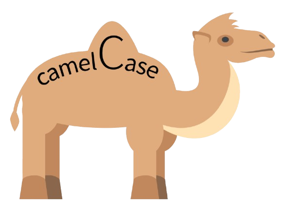
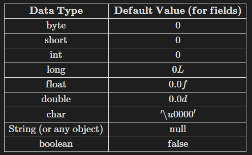
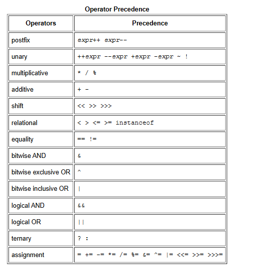

Vengono specificate con il modificatore final.
Le variabili sono scritte tutte in
CAMEL CASE la seconda parola è con l’iniziale maiuscola
SNAKE CASE dove ogni parola è separata da un _.

Se io definisco una variabile universale tanto vale che sia anche statica, quindi la definizione corretta sarebbe static final
Perché static final?
final: significa che il valore non può essere modificato una volta assegnato.
static: rende la variabile condivisa tra tutti gli oggetti della classe. Se una costante è universale, static permette di non creare copie della costante per ogni oggetto, ma di condividerla.
ESEMPIO
class Esempio { static final int sonoUnaCostante = 10; // Definizione e inizializzazione della costante con camelCase static final int SONO_UNA_COSTANTE = 20; // UPPERCASE + snake_case public static void main(String[] args) { System.out.println("Il valore della costante è: " + sonoUnaCostante); System.out.println("Il valore della costante è: " + SONO_UNA_COSTANTE); }}
Dati primitivi
BYTE = 8 bit
SHORT = 16 bit
INT = 32 bit
LONG = 64 bit
Quelli in virgola mobile
FLOAT = 32 bit
DOUBLE = 64 bit
Altri
BOOLEAN
CHAR, che è definito secondo la tabella UNICODE a 16 bit, ma nulla vieta di interpretarlo secondo un determinato encoding
STRING, non sono dei dati primitivi bensì di una classe speciale di tipo oggetto, ma Java le riserva un trattamento particolare.
Default values
Vengono assunti quando un determinato tipo primitivo non è inizializzato.

Tutti gli oggetti, che sono in realtà dei puntatori, se non inizializzati hanno valore NULL perché non puntano a nulla.
Array
Un array è una struttura dati che ti permette di memorizzare più elementi dello stesso tipo in un’unica variabile.
Tutti gli elementi all’interno di un array devono essere dello stesso tipo, e questo tipo viene definito al momento della sua creazione. Se crei un array di interi (int[]), potrà contenere solo numeri interi.
ESEMPIO
class ArrayEsempio{ int[] numeri; // Crea un array di interi numeri = new int[5] // Alloco memoria per 5 interi numeri[0] = 10; // inizializzo il primo elemento numeri[1] = 20; // inizializzo il secondo numeri[2] = 30; // ecc. numeri[3] = 40; numeri[4] = 50; System.out.println(numeri[2]); // Stampa 30}// OVVIAMENTE PER RIEMPIRE L'ARRAY POSSO UTILIZZARE UN CICLO FOR O ALTRE COSE.
Un altro modo per creare e inizializzare un array è questo
int[] numeri = { 10, 20, 30, 40, 50};// Qui non devo specificare la dimensione dell'array perché Java la calcola in automatico
Differenze tra il primo e il secondo?
Il secondo esempio riguarda un’INIZIALIZZAZIONE STATICA, perché tutte le informazioni dell’array sono contenute all’interno del programma stesso
Il primo esempio riguarda un’INIZIALIZZAZIONE DINAMICA (data dal new), perché io posso invocare il new quante volte voglio all’interno del programma.
Un array multidimensionale è un array che contiene altri array come elementi. Questo significa che puoi avere array di array (ad esempio, una “matrice”), con la particolarità che questi possono essere array “irregolari”.
Questo significa che ogni riga (o sotto-array) può avere una lunghezza diversa.
ESEMPIO
class ArrayMultiDim { public static void main(String[] args) { String[][] names = { {"Mr. ", "Mrs. ", "Ms. "}, // lunghezza 3 {"Smith", "Jones"} // lunghezza 2 }; System.out.println(names[0][0] + names[1][0]); // Mr. Smith System.out.println(names[0][2] + names[1][1]); // Ms. Jones }}
DICHIARAZIONE
String[][] names: dichiara un array bidimensionale di String. In questo caso, names è un array di array di stringhe.
names[0] è un array di stringhe {"Mr. ", "Mrs. ", "Ms. "}.
names[1] è un array di stringhe {"Smith", "Jones"}.
PRIMO PRINT
names[0][0] accede al primo elemento del primo array, che è "Mr. ".
names[1][0]:accede al primo elemento del secondo array, che è "Smith".
La riga System.out.println(names[0][0] + names[1][0]); stampa Mr. Smith, concatenando "Mr. " con "Smith".
SECONDO PRINT
names[0][2]: accede al terzo elemento del primo array, che è "Ms. ".
names[1][1]: accede al secondo elemento del secondo array, che è "Jones".
La riga System.out.println(names[0][2] + names[1][1]); stampa Ms. Jones, concatenando "Ms. " con "Jones".
Come si copiano gli Array
All’interno della classe system, che è una classe utility fornita dalla libreria standard, è presente un metodo statico, System.arraycopy, che permette di copiare una parte o tutto il contenuto di un array dentro un altro array.
Questo metodo accetta 5 parametri
System.arraycopy(Object src, int srcPos, Object dest, int destPos, int length);
Dove
src è l’array di origine, da cui copiare i valori.
srcPos è la posizione iniziale nell’array di origine, da cui iniziare a copiare.
dest è l’array di destinazione, dove incollare i valori copiati.
destPos è la posizione iniziale nell’array di destinazione, dove iniziare a incollare i valori.
length è il numero di elementi da copiare.
NB: gli elementi che vengono copiati in dest vanno a sovrascrivere quelli vecchi presenti da destPos in poi (ovviamente in base a length)
ESEMPIO
class ArrayCopyEsempio { public static void main(String[] args) { int[] arrayOrigine = {1, 2, 3, 4, 5}; int[] arrayDestinazione = {10, 20, 30, 40, 50}; // Copia 3 elementi a partire dalla posizione 1 di arrayOrigine // e li incolla a partire dalla posizione 2 di arrayDestinazione System.arraycopy(arrayOrigine, 1, arrayDestinazione, 2, 3); // Stampa arrayDestinazione per vedere il risultato for (int i : arrayDestinazione) { System.out.print(i + " "); /* OUTPUT {10, 20, 2, 3, 4} } }}
Spiegazione del For-Each
In questo esempio abbiamo utilizzato un ciclo for particolare, ossia il For-Each, che permette di iterare facilmente su ogni elemento di un array senza dover gestire manualmente l’indice.
La sintassi è
for (Tipo variabile : array) { // codice da eseguire per ogni elemento
}
- **`Tipo`**: il tipo di dato degli elementi nell'array (ad esempio, `int` se l'array contiene interi).
- **`variabile`**: un nome che scegli per rappresentare ogni elemento dell'array durante il ciclo; partendo dal primo elemento, ad ogni iterazione la variabile prenderà il valore del prossimo elemento nell'array che specifico.
- **`array`**: l'array su cui vuoi iterare (nel caso precedente, `arrayDestinazione`).
### Vantaggi del For-Each
Il ciclo for-each è utile perché è semplice da scrivere e evita errori legati agli indici. Tuttavia, è utile solo se devi leggere gli elementi dell’array, perché non ti permette di modificare gli elementi nella posizione originale.
Altra DOVEROSA precisazione del prof
Tutte le classi, per convenzione, si definiscono al singolare (es. una classe la chiamerò PERSONA e non PERSONE).
Esiste però una classe standard in Java che si chiama Arrays.
Ma perché il plurale?
Perché all’interno di questa sono presenti TUTTE le utilities per gli Array (tranne arraycopy ma il motivo non è importante).
Un altro approccio simile al arraycopy può essere copyOfRange
class ArrayCopyEsempio { public static void main(String[] args) { int[] arrayOrigine = {1, 2, 3, 4, 5}; // Creo un nuovo array copiando dall'elemento 2 al 5 (non incluso) di arrayOrigne int[] arrayDestinazione = java.util.Arrays.copyOfRange(arrayOrigine, 2, 5) // Stampa arrayDestinazione per vedere il risultato for (int i : arrayDestinazione) { System.out.print(i + " "); /* OUTPUT {2, 3, 4} } }}
Operatori
Se io scrivo come statement, da solo a++ oppure ++a non cambia nulla.
MA se io ho a = 5 e scrivo
b = ++a, PRIMA viene incrementato a (a = 6) e poi assegno questo valore a b (b = 6)
b = a++, PRIMA viene assegnato il valore a b (b = 5) e poi viene incrementato a (a = 6)
TUTTI GLI OPERATORI

SPIEGAZIONE DI ALCUNI
1. Shift (<<, >>, >>>)
Gli operatori di shift spostano i bit di un numero a sinistra o a destra. Funzionano solo su valori numerici e spostano i bit di un numero binario per modificare il valore.
<< (shift a sinistra): sposta i bit a sinistra e riempie con zeri a destra. Ogni spostamento a sinistra equivale a moltiplicare per 2.
int a = 5; // 5 in binario è 00000101int b = a << 1; // sposta di 1 bit a sinistra: 00001010// b ora vale 10
>> (shift a destra con segno): sposta i bit a destra, mantenendo il segno del numero (riempiendo con 0 se positivo o con 1 se negativo).
int a = 20; // 00010100int b = a >> 2; // sposta di 2 bit a destra: 00000101// b ora vale 5
>>> (shift a destra senza segno): sposta i bit a destra, riempiendo con zeri, indipendentemente dal segno del numero.
2. instanceof
L’operatore instanceof verifica se un oggetto è istanza di un altro.
È utile per il controllo del tipo in fase di esecuzione.
Funziona anche con le istanze non solo con le classi.
String testo = "Hello";boolean risultato = testo instanceof String; // true, perché testo è di tipo String
Esempio pratico
class Animale {}class Cane extends Animale {}class instanceofprova{ public static void(String[] args){ Animale animale = new Animale(); Cane cane = new Cane(); System.out.println(cane instanceof Animale); // true, perché `cane` è un'istanza di `Cane`, che deriva da `Animale` System.out.println(animale instanceof Cane); // false, perché `animale` è un `Animale` generico e non un `Cane` }}
###### 3. **Bitwise AND (&)**
L’operatore **Bitwise AND** (`&`) effettua un’operazione logica AND tra i **bit** di due numeri. Funziona confrontando i bit di due numeri binari e ritorna 1 solo se entrambi i bit sono 1.
```java
int a = 5; // 0101 in binario
int b = 3; // 0011 in binario
int risultato = a & b; // 0001 (1 in decimale)
4. Bitwise Exclusive OR (XOR) (^)
L’operatore Bitwise XOR (^) effettua un’operazione logica esclusiva OR sui bit. Restituisce 1 solo se i bit sono diversi.
int a = 5; // 0101 in binarioint b = 3; // 0011 in binarioint risultato = a ^ b; // 0110 (6 in decimale)
5. Bitwise Inclusive OR (|)
L’operatore Bitwise OR (|) effettua un’operazione logica OR tra i bit. Ritorna 1 se almeno uno dei bit è 1.
int a = 5; // 0101 in binarioint b = 3; // 0011 in binarioint risultato = a | b; // 0111 (7 in decimale)
6. Operatore Ternario (? :)
L’operatore ternario è una scorciatoia per l’istruzione if-else.
Ha la forma condizione ? valoreSeVero : valoreSeFalso, e ritorna un valore in base alla valutazione della condizione.
int a = 10;int b = 20;int max = (a > b) ? a : b; // max sarà uguale a b, quindi 20
DOVEROSA DIFFERENZA TRA .print e .println
System.out.print() stampa gli elementi su una sola riga
System.out.println() stampa gli elementi andando a capo ad ogni stampa
Parentesi doverosa a detta del prof
Allora, in principio c’era l’aski, cos’era l’ascii? Che non è il cane quello con gli azzurri, mait era se pronuncia aschi perché asci lo diciamo in italiano perché s c i per noi si legge così, però ehm è era una tabella che forniva una mappatura tra la maschera di bit presenti in un byte e dei caratteri da rappresentare. Ok? Perché immaginate che i caratteri che voi vedete a schermo in gergo glifi, ok? Sono solo una rappresentazione e una rappresentazione che deve eseguire una qualche regola di conformità. Ok? Questa regola è stata definita per la tabella è stata definita appunto grazie a questa tabella e mi diceva come mappare appunto questi grifi rispetto a una codifica in byte. Ok? Adesso il problema è che una volera era fatta sta tabella, grosso modo negli primi 127/128 insomma cosi, quindi sostanzialmente primo by primo bit zero, tutti gli altri quello che ne seguiva e erano presenti i carattuni degli alfabeti più noti, quindi ci trovavate sostanzialmente tutte le 26 lettere dell’alfabeto inglese, piccole, grandi, poi ci trovavate, non mi ricordo se gli accentati sono stati inseriti dopo, non credo che questo dell’ASP, poi ci trovavate tutta una serie di di di simboli tipici, l’andore, il trattino, dash e e così via. Insomma, mo non andate a chiedere tutti i simboli primi 127, però diciamo che là dentro c’è stata tutta roba cristiana che scrive dal 128 in poi. Immaginate che parlo della preistoria
è stato giunto dopo Latinone. Sì, l’hanno aggiunto con Leding One. Sì. Eh, tutto quello che viene da 128 in poi fino a 255 era in realtà utilizzato, sempre perché parliamo della pristoria per la grafica, perché perché mica c’era la grafica tutta via che cavete adesso voi con le macchine moderne. Una volta la grafica era semplicemente una serie di caratteri che erano arrangiati di modo da darvi qualcosa di visibile. Non so se avete visto qualche vecchio film anni 80, no? In cui si vedeva per esempio c’era un form, c’era un quadratino, il quadratino era fatto col rettangol o era fatto coi simboli di uguale col doppio tilde per i verticali e poi c’era uno speciale simbolo che era l’angoletto che aveva le due linee tutti questi simboli poi i cuoricini, le cose di qua e di là, eh tutte queste cose qui facevano parte di questa seconda sequenza di caratteri che era, diciamo, io poi concettualmente li ho divisi i primi 127 e i secondi 127. Mo se il fuoricino stava nei primi o nei secondi, non non me lo ricordo, però insomma il concetto era nei primi c’era tutto ciò che riguardava la scrittura normale e i simboli più utilizzati comunque nella scrittura e invece tutto il resto era dedicato agli aspetti grafici. Ovviamente questa cosa, diciamo, è diventata abbastanza inutile nel momento in cui la grafica ha iniziato a basarsi proprio su delle librerie dedicate, sulla possibilità di indicare specificamente dei pixel, invece che scrivere sempre, andare a indirizzare carattere per carattere. E quindi, insomma, questa questi 128 successivi sono diventati abbastanza inutili e quindi giustamente a un certo punto italiani, greci, spagnoli, tedeschi, europei che gli piaceva tanto rompere scatole. Gli americani che invece andavano dritti coi loro 26 caratteri buonanotte hanno iniziato a dire “Sì, però io c’ho la accentata arriva al tedesco, io c’ho l’ula, sapete quella che poi viene scritta o o e a ee oppure sono i due puntini sopra e che si leggono e e cose simili” e così via. Allora, eh e fino a qua, quindi facciamo il latin che è rimpiazziamo tutta la roba grafica che non ci serve più, ci imparchiamo dentro, le ha accentate, l’accento così, l’accento così, le entato al 100 così al 100 così quello pure per i pinnici con la doppia cosa con la tilde eccetera eccetera e quindi oh, siamo fatto contenti tutti, infatti si chiama Letin più o meno questa parte qua. Poi giustamente sono arrivati i cinesi hanno detto ah h che volevo fa’?
Eh, dire non lo so che fa, comprimiamo che ci inventiamo. E allora a un certo punto a un certo punto che si fa? Io
si inventa una tabella universale e questa è stata chiamata appunto viva la fantasia Unicode Universal Code, cioè una codifica universale nel quale c’era spazio per tutti, per i cinesi, per i giapponesi, per per i coreani ma pure per la lingua. E quindi a un certo punto felicemente ci abbiamo messo tutti gli alfabeti del mondo, non solo alfabeti, poi perché insomma alcuni sono non sono fonetici, quindi non sono alfabetti, però insomma comunque tutti i glifi possibili immagin inabili e il problema è che questa tabella era bella grande. Cosa pare una tabella a 32 bit, ok? Per cui enorme, cioè molto più di molto più spazio di quello che serve. Il problema è che 32 bit sono un po’ scomodi per fare. Allora, si sono inventati dei delle versioni più corte. Per esempio c’è Unicode 16 dove credo che venga coperto quasi tutto e eh e utilizza due B. E poi a un certo punto qualcuno ha avuto una bella idea, ha detto “Sentite Boh, vabbè, fa spazio per tutti, pure sti italiani con gli accenti, le cose, accento così, accento cosà, eccetera eccetera. Ma se noi facessimo un metodo compresso in cui io dico se il primo bit è zero, allora questa cosa dura un byte e quindi devi leggere solo un byte e ci mettiamo le classiche cose con cui abbiamo fatto pace. Se il primo bit è uno, allora non è che c’hai accesso a un altro resto della tabella. Sai che invece devi leggere N2 di B, ok? E quindi tu devi avere sostanzialmente un meccanismo compresso in cui ogni volta devi sapere come andare a leggere il byte successivo sulla base di quello precedente. È una notifica compressa, è una di quelle più utilizzate, l’avrete sicuramente sentita come nome, senza sapere esattamente cosa sia. Si chiama UTF8 ed è appunto Unicode blabo che cosa, a 8 bit che è la versione stracompressa in cui, appunto, avete sempre un bit di riferimento che vi dice se dovete andare a ere più informazione perché dovete comprendere qualche carattere che non rientra nei primi 128.
Anticipazione di una cosa che riprenderemo poi
Math è una libreria di funzioni matematiche. Voi mi direte, “No, ma non ci sono le funzioni, ci sono solo i metodi in Java”. E infatti math è una classe che ha solo metodi, così come le costanti che sono il greco, il numero dello. Anche i metodi sono tutti statici. E voi mi direte, oddio, pure i metodi, quindi, sono statici. I metodi statici sono pure quelli un universali per una classe, che significa che possono essere imbocati direttamente dalla classe. Ancora una volta la sintassi non vi invocarli anche da un’istanza, però poco sensato e nel senso che è poco chiaro. Se io vedo un metodo chiamato da un’istanza mi aspetto che sia un metodo gravo. Se io lo chiamo dalla classe capisco che è un metodo di classe. Quindi, sebbene la senta, è sconsigliato invocare un metodo statico da una istanza. Meglio invocarlo direttamente dalla classe e far capire che è un metodo di classe. Se è un metodo di classe Attenzione, ci sono delle cose che sono riempite in già. Non potete inserire un riferimento non statico all’interno di un mezzo statico. Cioè, se io c’ho la variabile velocità della bicicletta e questa è una variabile non statica perché ogni bicicletta c’ha la il valore suo, non potete fare un metodo eh statico della classe bicicletta che faccia riferimento alla velocità. Perché dice la velocità di chi? Visto che questo è un metodo generale.
Ecco, i metodi statici sapete di fatto cosa sono?
Sono funzioni. Vedete le care vecchie funzioni dei linguaggi tradizionali di programmazione tradizionale intendo prima della programmazione oggetti, no? E non è che non esistono, esistono di fatti sono i metodi statici perché per esempio la classe MATH non è pensata per avere istanze, nel senso c’è un’istanza della matematica, ok? La classe MATH è pensata di fatto, pensate che quel math là dentro si comporta qui come se fosse un package di funzioni, però dato che non potete avere la funzione dichiarata senza una classe attaccata, ecco, la classe math si sta comportando come se fosse semplicemente un collettore, proprio come se fosse un package, no, di funzioni e di costanti. Ok? Infatti dentro ci trovate una marea di funzioni matematiche e ci trovate dentro anche le due costanti che vi ho detto prima. Ok? Quindi di fatto il compito delle funzioni, no, è assolto dai metodi statici. In quel caso, appunto, la classe che contiene, visto che non ha nessuna caratteristica, no, che che che va a essere mantenuta, ecco, di fatto la classe che li contiene si si comporta veramente più come un collettore logico, un po’ con lo stesso lavoro che fa il packaging, cioè io volevo tutte le funzioni matematiche, dove le metto in una cosa chiamata math. Ma posso mettere le funzioni in Java? No, devo avere i metodi che sono attaccati a una classe. Benissimo, la classe MATH svolge il compito di collettore di tutte le funzioni matematiche.